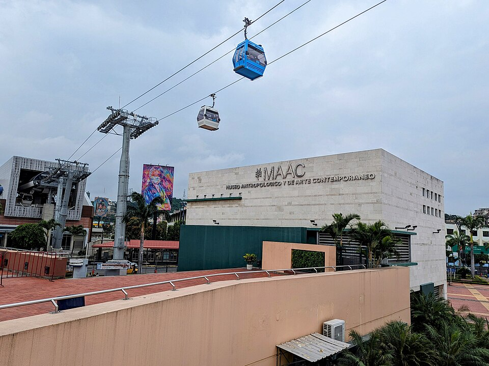
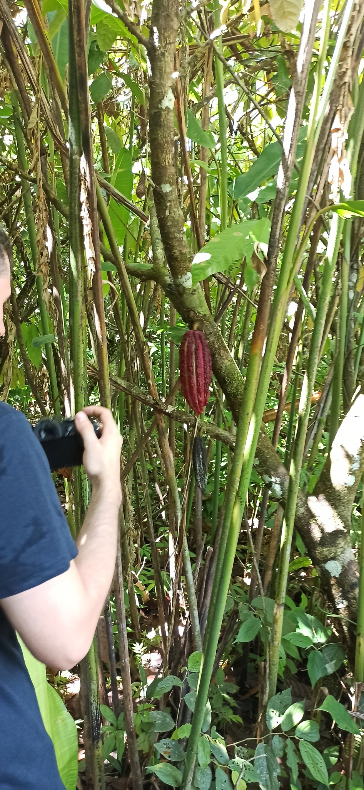

MAAC
El Museo Antropológico y de Arte Contemporáneo permite aproximarse a expresiones artísticas y culturales vinculadas con el Ecuador.
MuseosGYE
MuseosGYE es un proyecto académico sobre el interés cultural de los jóvenes en los museos de Guayaquil. Toma como referentes el Museo Antropológico y de Arte Contemporáneo (MAAC) y el Museo del Cacao.
Este sitio se desarrolla para la asignatura Desarrollo de Aplicaciones Web y Móviles. Busca conocer cómo se relacionan los jóvenes con los espacios museísticos y qué aspectos podrían acercarlos a su patrimonio cultural.
Los resultados del proyecto se basarán en una encuesta real que se aplicará posteriormente. Por ello, esta etapa no presenta resultados ni conclusiones anticipadas.
Conoce los dos referentes culturales considerados para el estudio.
El Museo Antropológico y de Arte Contemporáneo permite aproximarse a expresiones artísticas y culturales vinculadas con el Ecuador.
El Museo del Cacao propone un acercamiento a la historia y al valor cultural de uno de los productos emblemáticos del país.
El MAAC es uno de los referentes del proyecto para explorar la relación de los jóvenes con el arte, la historia y la cultura en Guayaquil. El Directorio Nacional de Museos lo registra en las áreas de arqueología, antropología, etnografía y arte.

Sus campos de trabajo permiten aproximarse a objetos, prácticas y expresiones artísticas desde distintas perspectivas. Para este proyecto, el MAAC es un referente para conversar sobre cómo los museos pueden acercar el patrimonio cultural a públicos jóvenes.
El Museo Nacional del Cacao presenta un recorrido por etapas de la historia del cacao en Ecuador. Su sitio oficial explica que su propuesta incluye piezas originales y réplicas, recreaciones de escenarios y recursos interactivos para abordar la relevancia social, económica y simbólica del cacao.

El cacao permite vincular la historia de Guayaquil con procesos de cultivo, intercambio, transformación y consumo. El museo constituye así un referente para explorar cómo un producto puede comunicar memoria cultural y abrir preguntas sobre la identidad del país.
La encuesta se diseñará y aplicará en una fase posterior del proyecto para recopilar información directamente de jóvenes participantes.
Los museos abordados se encuentran en Guayaquil, Ecuador. La información de ubicación y orientación para visitas se incorporará con fuentes verificadas en una etapa posterior.